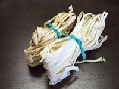

かんぴょう（干瓢）の生産量 都道府県ランキング
1位から3位までと、とれた量
かんぴょうが日本でいちばん多くとれるのは栃木県です。167 tで、全国（167 t）の100%を占めます。

| 順位 | 都道府県 | 収穫量 | 全国に占める割合 |
|---|---|---|---|
| 1位 | 栃木県 | 167 t | 100% |
| 2位 | 滋賀県 | 1 t | 0.6% |
この数字について
- 分類：ウリ科
- 全国の収穫量：167 t
- この数字が表すもの：収穫量（畑や田でとれた重さ）
- 調査：地域特産野菜生産状況調査 令和6年産
- 2県分を調査（調査していない県は順位に入りません）
かんぴょうの生産量について、よくある質問
- かんぴょうの生産量が日本一の都道府県はどこですか？
- 栃木県です。地域特産野菜生産状況調査（令和6年産）で167 tでした。
- かんぴょうの生産量ランキング2位・3位はどこですか？
- 2位は滋賀県（1 t）です。
- かんぴょうの全国の生産量はどれくらいですか？
- 167 t（令和6年産）です。